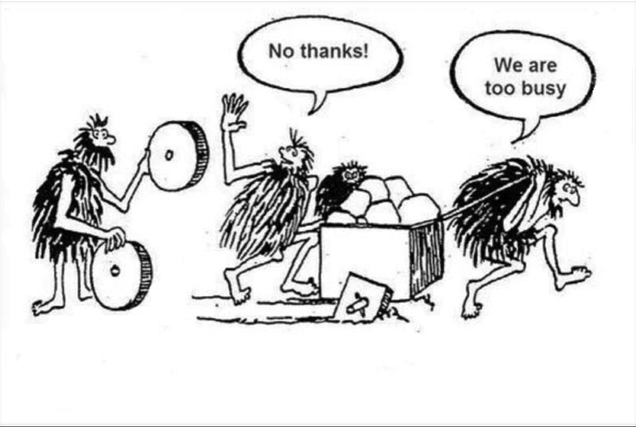

do-it ?
do-it est une option de troisième année de l'école centrale Marseille.
Centrée autour de l'élève, elle vise à acquérir des compétences dans le domaine de l'IT dans trois axes (objet/discipline) non mutuellement exclusifs :
- Développement / Informatique
- Systèmes d'Informations / Management
- Méthodes /Gestion de Projet
Un descriptif détaillé du programme.
L'ambition de do-it en une (célèbre) image. Nous espérons que nos élèves soient toujours les personnes de gauche.
